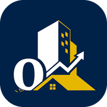

단지 화면은 r33의 B안(빨간 바탕 + 흰 DS)으로 정했습니다. 첫 화면과 나머지 화면에는 소스 폴더의 사무소로고.png를 씁니다. 소스 폴더에 있는 로고 그림은 이것 하나뿐입니다.

원부동산| 화면 | 주소 | 아이콘 |
|---|---|---|
| 첫 화면 | / | 사무소 로고 |
| 단지 화면 | /daelasoo/ | B안 DS |
| 검색용 단지 페이지 (확인 필요) | /daelasoo/plan · /location · /dongho 등 | B안 DS — 대라수 내용이라 같은 아이콘을 제안합니다 |
| 직원 화면 (확인 필요) | /daelasoo/staff/ 와 직원용 화면 전체 | 사무소 로고 — 사무실 업무 화면이라 이 아이콘을 제안합니다 |